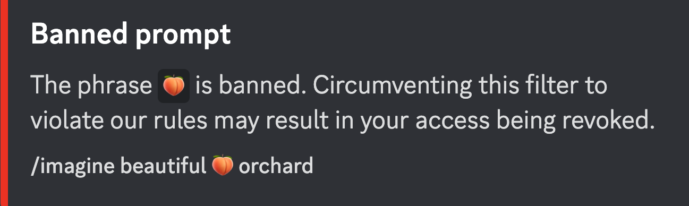
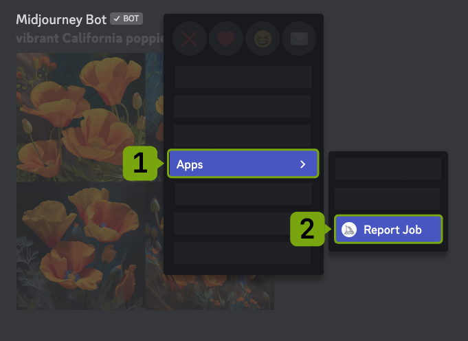
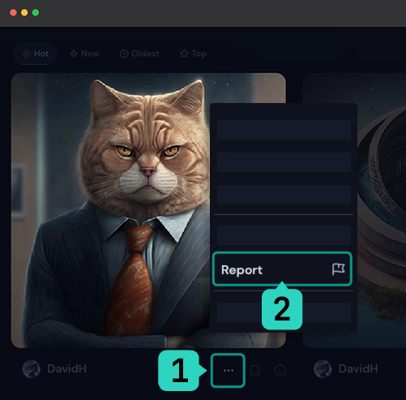

Linee guida della comunità
Midjourney è una comunità aperta per impostazione predefinita. Per mantenere la piattaforma accessibile e accogliente per il più ampio numero di utenti, i contenuti devono essere di tipo PG-13.
- Siate gentili e rispettate gli altri e lo staff. Non create immagini o utilizzate messaggi di testo che siano intrinsecamente irrispettosi, aggressivi o comunque offensivi. Non saranno tollerate violenze o molestie di alcun tipo.
- Nessun contenuto per adulti o gore. Si prega di evitare di creare contenuti visivamente scioccanti o inquietanti. Alcuni input di testo verranno bloccati automaticamente.
- Non ripubblicare le creazioni di altri senza il loro permesso. Fai attenzione alla condivisione. È possibile condividere le proprie creazioni al di fuori della comunità Midjourney, ma è bene considerare come gli altri potrebbero vedere i propri contenuti.
- Qualsiasi violazione di queste regole può portare all'interdizione dai nostri servizi. Non siamo una democrazia. Comportatevi in modo rispettoso o perderete il diritto di utilizzare il Servizio.
Queste regole si applicano a tutti i contenuti, comprese le immagini realizzate nei server privati, utilizzando la Modalità privata e nei messaggi diretti con il Bot di Midjourney. Per informazioni più aggiornate, consultare il canale Discord #rules.
NOTE
Cosa è considerato "Gore"?
Il gore comprende immagini di parti del corpo staccate di esseri umani o animali, cannibalismo, sangue, violenza (immagini di sparatorie o attentati, per esempio), corpi deformi, arti mozzati, pestilenze, ecc.
Che cos'è considerato NSFW (Not Safe For Work) o contenuto per adulti?
Nudità, organi sessuali, i seni nudi, persone nelle docce o nei bagni, immagini sessuali generiche, feticci, ecc.
Altri contenuti offensivi
Altri contenuti sono ritenuti offensivi o abusivi se possono essere considerati razzisti, omofobi, inquietanti o in qualche modo sprezzanti per una comunità. Ciò include bambini nudi e immagini offensive di celebrità o personaggi pubblici. Le linee guida sui contenuti vengono continuamente riviste e possono essere modificate in base alla crescita della comunità Midjourney.
Termini bannati automaticamente
Trovare un equilibrio tra l'espressione artistica e la creazione di una comunità sicura e accogliente per un ampio gruppo di utenti è una sfida. Ognuno ha il diritto di avere un'opinione su quali immagini siano belle, intriganti o stimolanti, e ci sono altrettante interpretazioni individuali su quali contenuti siano offensivi, inappropriati o dannosi. Riconosciamo anche che l'arte ha una lunga storia che la vede e l'ha vista sfidare le convenzioni sociali, ispirare discussioni e innescare cambiamenti.
Nel decidere le linee guida della comunità per Midjourney, abbiamo considerato molti fattori. Essendo una tecnologia nuova e in rapido sviluppo, è importante considerare il modo in cui il pubblico più ampio percepirà e sarà introdotto a questa tecnologia. Midjourney è uno strumento di creazione di immagini più partecipativo di un pennello o di una matita. Il team di Midjourney non vuole partecipare alla creazione di immagini pornografiche, offensive o dannose. La cosa più importante, tuttavia, è il nostro desiderio di creare una comunità accogliente e inclusiva per tutti gli utenti. A tal fine, abbiamo stabilito delle linee guida che vietano determinati comportamenti e linguaggi sulla nostra piattaforma. Un aspetto di queste linee guida è il divieto di parole e frasi che sono state usate in modo dannoso o offensivo nei confronti dei membri della nostra comunità.
Siamo consapevoli che l'equilibrio che abbiamo deciso e la decisione di vietare alcune parole potrebbero non essere graditi a tutti. Ci auguriamo comunque che rispetterete i nostri sforzi per creare una comunità positiva e solidale per tutti. Vi incoraggiamo a esprimervi in modo creativo, ma a farlo in modo rispettoso e attento agli altri.
Perché proprio questa parola è bannata?
Alcune parole e frasi sono vietate perché producono contenuti ampiamente considerati inappropriati, offensivi o dannosi. Alcune parole vietate sembrano sicure ma producono costantemente immagini che violano le linee guida sui contenuti.
Ricordate che il Bot Midjourney non comprende il linguaggio come un essere umano. Ad esempio, l'emoji della pesca 🍑 è attualmente una parola vietata e la richiesta "bel frutteto 🍑" farebbe scattare il filtro delle parole vietate. Nessuno pensa che un bel frutteto di peschi sia offensivo o non sicuro da vedere al lavoro. Tuttavia, l'emoji 🍑 è anche uno slang comune per indicare il sedere ed è spesso associata a immagini NSFW, quindi i risultati effettivi della richiesta di un "bellissimo 🍑 frutteto" sono più problematici di quanto si possa pensare.
Gli utenti che violano ripetutamente i termini di servizio possono essere avvertiti da un moderatore della comunità, ricevere un time-out dall'accesso al bot o essere bloccati dal servizio.
Autocontrollo e segnalazione
Occasionalmente, i prompt producono involontariamente contenuti non PG-13. Si prega di eliminare queste immagini utilizzando l'emoji di reazione ❌ o facendo clic con il tasto destro del mouse, selezionando Apps e poi su Cancel Job per eliminare l'immagine.
Gli utenti possono segnalare qualsiasi immagine per la revisione da parte del moderatore facendo clic con il pulsante destro del mouse, selezionando Apps e poi su Report Job all'interno di Discord o sul sito web selezionando ... sotto un'immagine e facendo clic su Report
Segnalare immagini su Discord
Segnalare immagini sul sito
